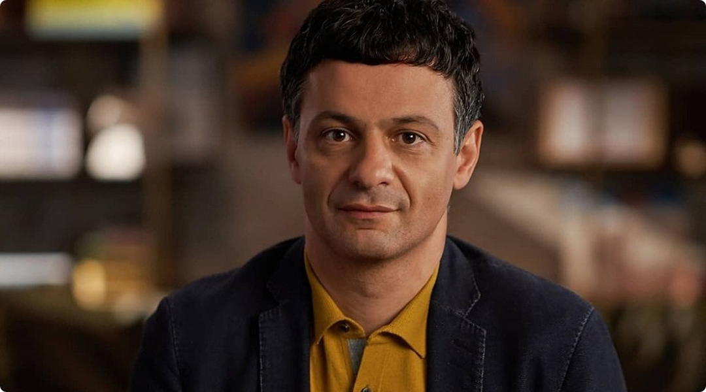

Артём Романович Оганов родился 3 марта 1975 года в Москве, в семье с глубокими армянскими корнями. Его род происходит из армянского княжеского рода Оганян, известного своей многовековой историей и вкладом в культуру и науку Армении. В семье сохранялись армянские традиции, но при этом царила атмосфера научного поиска. С детства Артём проявлял интерес к естественным наукам,
Артём Оганов в детстве. Фото: 22century.ru
Его нередко называют человеком, который перевернул мир, сделав возможным предсказание новых материалов и открыв множество новых явлений, но почивать на лаврах он не сбирается. Более того он считает, что как только начинаешь бронзоветь, умираешь как личность и как учёный. Обывателям с их пустыми разговорами про отсутствие настоящей отечественной науки, он рекомендует засучить рукава, да прибрать свой дом, а не стараться сделать ухоженным чужой.

«Любящий человек найдёт поэзию в том, что любит, — говорит Оганов.
— Мир вообще очень поэтичен. В случае кристаллов это поэзия формы,
симметрии, порядка».
Действительно, мало кто остаётся равнодушным к совершенству
кристаллических структур. Их геометрическая точность, бесконечная
повторяемость узоров и вневременная стабильность завораживают.
«Кристалл бесконечен, с ним ничего не случится и через миллиард
лет, — продолжает учёный. — Это самое стабильное состояние
вещества. Но в этой неживой форме есть особая красота».
Оганов отмечает, что даже сложные биологические процессы иногда
проще понять через призму кристаллографии. Его лекции на эту тему
произвели впечатление на биологов, показав, как законы неживой
природы могут объяснять явления жизни.